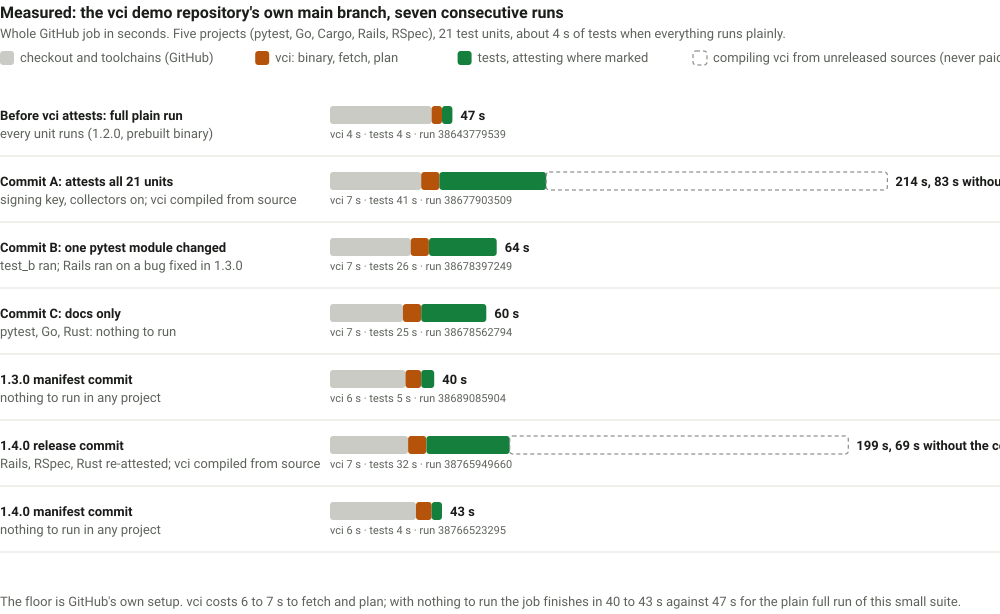
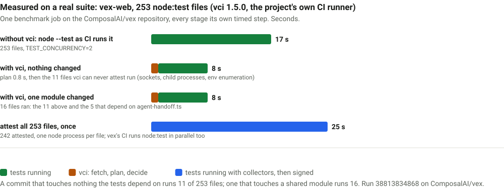
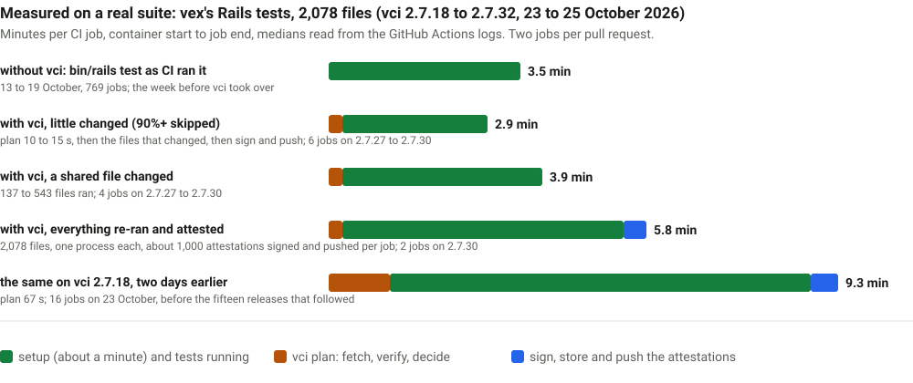

Examples
Worked examples you can copy. All output is real: it comes from this project's demo apps and their GitHub Actions runs.
A full round trip
An agent on a laptop (macOS arm64) changes a Rails model, runs the spec that covers it, and opens a pull request. CI (Ubuntu x86_64) then skips what the agent already ran. This is pull request 9 of this repository.
Two terms first. A unit is what vci can skip; here, one spec file. An attestation is a signed record that a unit passed against exactly the inputs it read.
1. Run and sign locally
vci run spec/models/b_spec.rb spec/lib/a_spec.rb \
--key ~/.ssh/id_ed255193 examples, 0 failures
vci: attested demo/rspec-app/spec/lib/a_spec.rb (65 inputs, root 2cbdcb32a9721b03)
as git-meta path:demo/rspec-app/spec/lib/a_spec.rb vci:attestation:…
vci: attested demo/rspec-app/spec/models/b_spec.rb (7517 inputs, root 9b40ad198ee598ce)
as git-meta path:demo/rspec-app/spec/models/b_spec.rb vci:attestation:…
vci: 2 attested, 0 not attestedWhy the input counts differ: a_spec.rb loads only spec_helper.rb and one library file. b_spec.rb boots Rails, so its inputs include every file Rails loaded or looked for.
2. See what CI will do
vci plan --base-ref origin/mainSKIP demo/rspec-app/spec/lib/a_spec.rb [rspec] (attested by vci-demo-agent (SHA256:RASHZ3Nm…))
SKIP demo/rspec-app/spec/models/b_spec.rb [rspec] (attested by vci-demo-agent (SHA256:RASHZ3Nm…))
RUN demo/rspec-app/spec/requests/d_spec.rb [rspec] (no attestation)
RUN demo/rspec-app/spec/views/c_spec.rb [rspec] (no attestation)3. Push the attestations and the branch
vci push # git-meta metadata on refs/meta/main
git push # your branch, as usual4. CI skips what was attested
From the Actions log of that pull request. The same job also covers the repository's Python, Go, Rust and Minitest demo projects.
using vci v0.3.0 (vci-x86_64-unknown-linux-musl.tar.gz, sha256 fdf03d19…)
vci: fetched git-meta metadata from meta (9 attestations stored locally)
SKIP demo/go-app/b [go] (attested …)
SKIP demo/rails-app/test/models/b_test.rb [rails] (attested …)
SKIP demo/rspec-app/spec/lib/a_spec.rb [rspec] (attested …)
SKIP demo/rspec-app/spec/models/b_spec.rb [rspec] (attested …)
RUN demo/rspec-app/spec/requests/d_spec.rb [rspec] (no attestation)
RUN demo/rspec-app/spec/views/c_spec.rb [rspec] (no attestation)
…
4 to skip, 17 to run5. A later change invalidates only what it touches
A second commit edits a FactoryBot factory, without re-running anything locally. CI runs the spec that uses the factory again, and still skips the one that does not load it:
SKIP demo/rspec-app/spec/lib/a_spec.rb [rspec] (attested …)
RUN demo/rspec-app/spec/models/b_spec.rb [rspec] (no valid attestation (1 candidates;
best failed inputs: entry:demo/rspec-app/spec/factories/gadgets.rb))Finding out why a test was not skipped
vci explain spec/models/b_spec.rb --base-ref origin/maindemo/rspec-app/spec/models/b_spec.rb: RUN (no valid attestation (2 candidates; best failed inputs: …))
candidate 1: git-meta path:demo/rspec-app/spec/models/b_spec.rb vci:attestation:475cf8ee…
signer: vci-demo-agent SHA256:RASHZ3NmCYc81DoZHkI4v3FtnJpGjnIeQqrIGF4SAog
issued 2026-10-03T05:32:00Z, expires 2026-10-17T05:32:00Z
failed check: inputs
(expected: recorded in the attestation; actual: this checkout / CI now)
entry:demo/rspec-app/spec/factories/gadgets.rb
expected: file exec=false size=72 blake3=52e17ed94130e310…
actual: file exec=false size=80 blake3=e756de105a350d6a…Each candidate attestation is listed with the first check it failed. expected is what the attestation recorded; actual is this checkout now. The common failed checks:
| Failed check | Meaning | What to do |
|---|---|---|
inputs | A file or directory listing the test used has changed | Run the test again with vci run |
env | A hashed environment variable has another value here, or is unset; explain names it and its class, e.g. env:DATABASE_URL (hash) | Give it the same value on both sides, or move it to [env] set; vci env shows the lists |
env-config | The base branch's [env] lists (or vci's built-in lists) differ from the attestation's; every attestation made before vci 1.6.0 fails this once | Run the test again; vci env --base-ref origin/main shows the difference |
toolchain | Language, runner or library versions differ between the two machines | Pin the same versions on both sides; see Test runners |
signer | The key is not in .vci/allowed_signers on the base branch, or has expired | Add the key on the default branch |
expiry | The attestation is older than its lifetime or max_ttl | Run the test again |
Setup for each runner
Each tab is a complete starting point: vci.toml, the commands to run locally (in the project directory), and the CI steps. What you pass to vci run depends on the runner: see Test runners.
Two settings recur in every vci.toml below:
platform = "any": an attestation made on one OS and architecture (a Mac laptop) may count on another (a Linux runner), as long as the toolchain matches.[env] set = { TZ = "UTC" }: vci sets these variables in every test process, on the laptop and in CI, so nobody exports anything. Every variable no[env]list names (set,hash,ignore) is removed from the test's environment, apart from a short built-in list per runner (PATH,HOME, ...), so it cannot change the result. See [env].
vci.toml
project = "."
adapter = "vitest"
[policy]
platform = "any"
no_skip_refs = ["refs/heads/main", "refs/tags/**"]
[env]
set = { TZ = "UTC", LANG = "C.UTF-8" }Locally
vci run src/cart.test.ts src/price.test.ts --key ~/.ssh/id_ed25519
vci plan --base-ref origin/main
vci pushCI steps
- uses: actions/checkout@v4
with:
fetch-depth: 0
- uses: actions/setup-node@v4
with:
node-version: 22 # same Node major version as locally
cache: npm
- run: npm ci
- uses: PandelisZ/cryptographically-verifiable-ci-runner@v2vci.toml
project = "."
adapter = "pytest"
[policy]
platform = "any"
no_skip_refs = ["refs/heads/main", "refs/tags/**"]
[env]
set = { TZ = "UTC" }Locally
export UV_PYTHON_PREFERENCE=only-managed
vci run tests/test_orders.py --key ~/.ssh/id_ed25519
vci plan --base-ref origin/main
vci pushCI steps
env:
UV_PYTHON_PREFERENCE: only-managed
steps:
- uses: actions/checkout@v4
with:
fetch-depth: 0
- uses: astral-sh/setup-uv@v6
with:
version: "0.11.7" # same uv version as locally
- run: uv sync --locked
- uses: PandelisZ/cryptographically-verifiable-ci-runner@v2vci.toml
project = "."
adapter = "go"
[policy]
platform = "any"
no_skip_refs = ["refs/heads/main", "refs/tags/**"]
go_allow_net = false # true if tests only link package net, e.g. through testify
[env]
set = { TZ = "UTC", CGO_ENABLED = "0" } # vci sets them everywhereLocally. The unit is a package, so pass package directories:
vci run ./orders ./pricing --key ~/.ssh/id_ed25519
vci plan --base-ref origin/main
vci pushCI steps
steps:
- uses: actions/checkout@v4
with:
fetch-depth: 0
- uses: actions/setup-go@v5
with:
go-version: "1.26.2" # exact version used locally
- run: go mod download
- uses: PandelisZ/cryptographically-verifiable-ci-runner@v2vci.toml
project = "."
adapter = "cargo"
[policy]
platform = "any"
no_skip_refs = ["refs/heads/main", "refs/tags/**"]
[env]
set = { TZ = "UTC" } # every unlisted variable is removed from the tests
# Files a test reads outside its own package must be declared.
[[inputs]]
match = ["crates/api#test:*"]
extra = ["testdata/**"]Locally. The unit is a test target: <package dir>#lib, #test:<name> or #doc. A package directory means all its targets.
vci run 'crates/api#test:orders' --key ~/.ssh/id_ed25519 # one target
vci run crates/core --key ~/.ssh/id_ed25519 # every target
vci plan --base-ref origin/main
vci pushCI steps
- uses: actions/checkout@v4
with:
fetch-depth: 0
- uses: dtolnay/rust-toolchain@master
with:
toolchain: "1.95.0" # same release as rust-toolchain.toml
- run: cargo fetch --locked
- uses: PandelisZ/cryptographically-verifiable-ci-runner@v2vci.toml
project = "."
adapter = "rails"
runner = "minitest"
[policy]
platform = "any"
no_skip_refs = ["refs/heads/main", "refs/tags/**"]
[env]
set = { TZ = "UTC" }Locally
vci run test/models/order_test.rb --key ~/.ssh/id_ed25519
vci plan --base-ref origin/main
vci pushCI steps
steps:
- uses: actions/checkout@v4
with:
fetch-depth: 0
- uses: ruby/setup-ruby@v1
with:
ruby-version: "3.4.9" # exact version in .ruby-version
bundler-cache: true
- uses: PandelisZ/cryptographically-verifiable-ci-runner@v2vci.toml
project = "."
adapter = "rails"
runner = "rspec"
[policy]
platform = "any"
no_skip_refs = ["refs/heads/main", "refs/tags/**"]
[env]
set = { TZ = "UTC" }
hash = [] # add "SPEC_OPTS" here if you set itLocally
vci run spec/models/order_spec.rb --key ~/.ssh/id_ed25519
vci plan --base-ref origin/main
vci pushCI steps
steps:
- uses: actions/checkout@v4
with:
fetch-depth: 0
- uses: ruby/setup-ruby@v1
with:
ruby-version: "3.4.9" # exact version in .ruby-version
bundler-cache: true
- uses: PandelisZ/cryptographically-verifiable-ci-runner@v2@v2 follows the latest tested 2.x release (@v1 stays on 1.9.2). For a release that never moves, or a full commit SHA, see pinning. GitHub Actions also lists the action's inputs.
When vci refuses to attest
Some tests cannot be vouched for. vci run then says why, instead of signing. Two spec files:
# spec/lib/shell_spec.rb
it "asks git for its version" do
expect(`git --version`).to include("git")
end
# spec/lib/pending_spec.rb
it "adds" do
expect(1 + 1).to eq(2)
end
xit "subtracts"vci: not attesting demo/rspec-app/spec/lib/pending_spec.rb: result failed (0 failed, 1 skipped or
xfailed of 2; a skipped test did not run, so it cannot be vouched for elsewhere)
vci: not attesting demo/rspec-app/spec/lib/shell_spec.rb: tainted: process:backtick
vci: 0 attested, 2 not attestedBoth files passed, but neither is attested:
shell_spec.rbstarts a child process. What that process reads is invisible to the collector (the part of vci that records each file and variable a test reads).pending_spec.rbhas an example that did not run, so nobody has checked it.
A refused test is not an error. It runs in CI as it always did.
| You see | Cause |
|---|---|
tainted: process:… | The test started a child process |
tainted: network:… or socket… | The test opened a network connection |
result failed (… skipped …) | A test or example was skipped or pending |
rspec:filtered | A focus or tag filter left examples out of the run |
wrote inside the repository: <path> | The test changed a tracked location |
input outside the repository: <path> | The test read a file CI will not have |
env:enumerated | The test read the whole environment, not named variables |
If you know a test depends on something vci cannot see, list it under never_skip in vci.toml.
Several runners in one repository
This repository's own vci.toml holds five projects with four adapters:
[policy]
platform = "any"
max_ttl = "30d"
no_skip_refs = ["refs/heads/main", "refs/tags/**"]
[env]
set = { TZ = "UTC", CGO_ENABLED = "0" }
[[projects]]
name = "py"
path = "demo/pytest-app"
adapter = "pytest"
[[projects]]
name = "go"
path = "demo/go-app"
adapter = "go"
[[projects]]
name = "rust"
path = "demo/cargo-app"
adapter = "cargo"
[[projects]]
name = "rails"
path = "demo/rails-app"
adapter = "rails"
[[projects]]
name = "rspec"
path = "demo/rspec-app"
adapter = "rails"
runner = "rspec"From the repository root, one command takes units of any project. vci finds the project each belongs to:
vci run demo/rspec-app/spec/models/b_spec.rb \
demo/go-app/b 'demo/cargo-app/a#lib' \
--key ~/.ssh/id_ed25519In CI, set up every toolchain and call the action once. Adapted from this repository's workflow:
env:
UV_PYTHON_PREFERENCE: only-managed # TZ and CGO_ENABLED come from vci.toml
steps:
- uses: actions/checkout@v4
with:
fetch-depth: 0
- uses: astral-sh/setup-uv@v6
with: { version: "0.11.7" }
- uses: actions/setup-go@v5
with: { go-version: "1.26.2" }
- uses: dtolnay/rust-toolchain@master
with: { toolchain: "1.95.0" }
- uses: ruby/setup-ruby@v1
with: { ruby-version: "3.4.9", bundler-cache: true, working-directory: demo/rails-app }
- uses: ruby/setup-ruby@v1
with: { ruby-version: "3.4.9", bundler-cache: true, working-directory: demo/rspec-app }
- run: |
(cd demo/pytest-app && uv sync --locked)
(cd demo/go-app && go mod download)
(cd demo/cargo-app && cargo fetch --locked)
# (this repository itself uses ./, to test the action from its own checkout)
- uses: PandelisZ/cryptographically-verifiable-ci-runner@v2The whole job, 21 units across five projects, takes under a minute. The vci step takes about ten seconds.
Looking at attestations in git
Attestations are git-meta metadata. There is no server and no separate database. They live on refs/meta/main of your repository and travel with git push and git fetch.
git ls-remote origin 'refs/meta/*'d413f4b9835da1961068518613a00524f0034690 refs/meta/mainEach attestation is attached to the path of the unit it covers. With the git meta CLI installed (cargo install git-meta-cli) you can read them directly:
git meta get path:demo/go-app/bdemo/go-app/b;vci:attestation:a2ad9aa8…:4404876773660987:61dfaf94… {"payloadType":"application/vnd.in-toto+json", …}
demo/go-app/b;vci:attestation:a2ad9aa8…:4404876773660987:74cca9cb… {"payloadType":"application/vnd.in-toto+json", …}The key has three parts after vci:attestation:
- a hash of the unit's id;
- the signer's id;
- a hash of everything the attestation covers.
The value is the signed envelope. The two entries here mean the same signer attested the package against two different sets of inputs.
Metadata is not trusted on its own. Anyone who can push to the repository can write or delete these values. A value only leads to a skip when its signature verifies against a key in the base branch's .vci/allowed_signers, and every input still matches. Deleting one only makes that test run.
To drop expired attestations:
vci prune --dry-run
vci prune && vci pushAn agent's loop
An agent uses the same commands as a person. Give it its own key, listed with an expiry in .vci/allowed_signers on the default branch:
build-agent namespaces="vci-attest",valid-before="20270101" ssh-ed25519 AAAAC3Nza…Then, after each change it makes:
export VCI_SIGNING_KEY=~/.config/vci/agent_ed25519 # so --key can be left out
vci run spec/models/order_spec.rb # the tests that cover the change
vci plan --base-ref origin/main # optional: confirm what CI will skip
vci push && git pushSeveral agents can work on one branch. Each signs with its own key, their attestations never overwrite each other, and CI accepts any of them that is still valid.
Measured on this repository
Numbers from one run of this repository's benchmark workflow, every stage its own timed step, with vci 1.5.0 downloaded as the release binary. The demo projects are five small suites with 21 test units and six seconds of tests: enough to measure what vci costs, too small to show what it saves.

| Stage | Seconds | What it tells you |
|---|---|---|
| plain: full suite without vci | 6 | the suite itself |
| vci: the action with nothing changed | 2 | the fixed cost of every job: a 0.6 s binary download, then fetch, plan and decide in 1.5 s (12 s in 1.4.1); no test runner started |
| vci run: attest all 21 units | 31 | about 1.5 s per test file or package on top of the tests in it, not per test case: each unit runs in its own process with a collector, and each Rails file boots the app |
| vci push | 4 | publishing 21 attestations through git-meta |
| vci ci: one pytest module changed | 2 | one file ran, 20 skipped |
| vci ci --key: one Rails model changed | 11 | the four Rails files that load the model ran and were re-attested |
So attesting is slower than running, by roughly a process start per test file or package, and it is paid once per change on one machine; every later run of an unchanged unit, on any machine, costs the plan. A unit is a file or package, so a file with forty tests pays the same 1.5 seconds as this demo's files with one or two. The run took about 95 seconds in all, 28 of them GitHub's own setup. VCI_TIMING=1 in that workflow prints what the plan spent per phase: the attestation fetch (0.9 s, overlapped), the Ruby toolchain probes (0.5 s each), the verdicts (0.4 s).
Measured on a real suite: vex-web
The demo above shows vci's costs. This is a suite where it saves time: ComposalAI/vex's web package, 253 node --test files, measured by a benchmark workflow in the vci pull request on the project's own CI runner, with vci 1.5.0 downloaded as the release binary. The plain run is the exact command vex's CI uses. Attesting all 253 files took 25 seconds against 17 for the plain run, because node:test already runs files in parallel; 242 attested and 11 refused by design, since they open sockets, spawn processes or enumerate the environment.

With nothing changed, the job runs the 11 files that can never be attested and nothing else: 8 seconds instead of 17, of which vci's own plan is 0.8. A change to a shared module adds the 5 files that depend on it. The 11 files are the floor; listing them in never_skip would make that explicit rather than cheaper.
Measured on a real suite: vex's Rails tests
The vex-web numbers above are one benchmark job. This is production: every Rails job of ComposalAI/vex's pull requests and master runs from 23 to 25 October 2026, 266 plans read from the GitHub Actions logs, on a suite of 2,078 test files split over two jobs per pull request, with a seeded MySQL database and 16 test slots per job. vci went through fifteen releases in those two days (2.7.18 to 2.7.32), each removing one measured cost; the numbers below say what that bought and what it still costs.

A job where little changed is now shorter than the plain job: the minute of setup is the same, the plan takes seconds, and only the files that changed run. A job where everything re-runs is still longer than plain, because each file runs in its own process so its inputs can be recorded, and about a thousand attestations are then signed, stored and pushed. On this suite that is the honest trade: cheaper when the suite was run before, dearer when it was not. Across October, before the speed work, the average vex Rails job with vci took about 30% longer than without, because most pull requests touched something every Rails test loads (a new autoload constant, a migration, routes.rb, an initializer) and re-ran everything at the old plan cost. Those re-runs are correct, not a defect; they are the price of recording inputs at file granularity in a framework that loads most of itself for every test.
The plan step, release by release
| vci | Plan, median | What changed |
|---|---|---|
| 2.7.18 (23 Oct) | 67 s (35 plans; p90 77 s) | the version measured first |
| 2.7.19 | 32 s pull requests, 21 s master | the store remembers what each blob names and which trees are complete |
| 2.7.22 to 2.7.26 (24 Oct, morning) | master 10.5 s (9 of 20 plans under 10 s; best 6.5 s) | Rails boots beside the fetch; candidates read in one batch; only the newest few read first; store warmed in the background |
| 2.7.27 to 2.7.32 (24 Oct evening onward) | 15 s pull requests (29 plans; p90 27 s), 15 s master; 4.0 to 4.4 s on the quietest jobs | completeness walks only new objects; the metadata commit is one fast-import; the plan remembers which attestation passed per unit per tree; no second round after an inputs failure; the tip listing kept as one blob |
Where the 15 seconds go now, medians over the last twelve pull request plans: 7.4 s fetching and merging the attestations master pushed since the job's cache was saved, 2.1 s downloading the attestation files the verdicts need, 1.6 s re-hashing inputs for the verdicts, 1.1 s for the second look at units that did not pass, 0.7 s reading candidates. The fetch is the structural part: master attests every file it runs, and a busy evening pushes 300 to 1,800 new attestations per run, which every pull request plan then merges into its git-meta store. That cost is what the next piece of work is about, below.
Two things seen in the same logs that are not vci: in part of the evening of 24 October, GitHub's cache restores took about 140 s each (the toolchain, the gems and the attestation store alike, in 17 of 29 jobs), adding four to five minutes to those jobs; and a merge that broke ten tests made every branch red for three hours, with every retry failing again, which is the runner doing its job. One thing that is vci: when a single-file retry hangs, nothing stops it until the job's 30 minute timeout. A deadline for that retry is queued.
What comes next, from these numbers: the attestation store is becoming a trait with git-meta as its first implementation and SQLite and PostgreSQL backends behind it, so a shared server can answer a plan in a few round trips instead of a fetch and merge of everything master pushed; and the per-file retry gets a time limit.
Live runs to look at
| Pull request | Shows |
|---|---|
| 9 | RSpec, Minitest and Go units attested on macOS and skipped on Linux; a factory edit re-running one spec |
| 8 | Python, Go, Rust and Rails in one job; a fixture edit re-running the Rails tests |